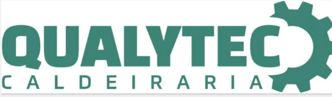

Motoboy para empresas em Campinas: coleta urgente 24h
Um contrato que precisa ser assinado antes do fim do expediente, uma peça que parou a operação, uma chave de acesso que só chega se alguém for buscar agora — a urgência da sua empresa não escolhe hora. O motoboy 24h da Brulezzi está disponível todos os dias, a qualquer hora, pra resolver isso sem central eletrônica e sem espera.
Quando chamar o motoboy 24h
- Contrato, documento ou chave que precisa chegar ainda hoje, antes do fechamento
- Entrega de madrugada, fim de semana ou feriado, quando a operação não pode parar
- Peça, insumo ou encomenda que não pode esperar o próximo turno
- Urgência de escritório, clínica, indústria ou comércio
Como funciona
Chama no WhatsApp, descreve o que precisa transportar e o endereço de coleta e entrega. Confirmamos valor e prazo na hora, e um profissional parceiro da nossa rede já sai pra coleta — com acompanhamento em tempo real pela nossa equipe até a confirmação de recebimento.
Cobertura
Em Campinas e Indaiatuba, a previsão de chegada para coleta é de 15 a 30 minutos. Em Santos, de 20 a 45 minutos. Confirmamos o prazo para o endereço, horário e disponibilidade; o tempo de entrega depende da rota.
"Precisei dos serviços deles, foram super profissionais, entregam rápido e com todo cuidado. Recomendo!!!"— Camila, cliente Brulezzi Transportes

Perguntas frequentes
O motoboy atende de madrugada e feriado?
Sim, atendimento 24 horas todos os dias, incluindo madrugada, fim de semana e feriado.
Qual o tempo de resposta?
Em Campinas e Indaiatuba, a previsão de chegada para coleta é de 15 a 30 minutos. Em Santos, de 20 a 45 minutos. Confirmamos o prazo para o endereço, horário e disponibilidade; o tempo de entrega depende da rota.
O motoboy 24h custa mais caro que no horário comercial?
Pode ter um adicional por urgência e horário, sim — é assim em qualquer operação que mantém equipe pronta pra sair de madrugada. Os fatores que compõem o preço estão detalhados no guia dos fatores de preço.
Preciso de contrato pra chamar um motoboy avulso?
Não. Chame no WhatsApp, combine o valor e o prazo, e pronto. Se a urgência é rotina na sua empresa, vale conhecer o plano mensal, com atendimento prioritário.
Precisa de um motoboy agora?
Chamar motoboy agoraO que confirmar antes da coleta
Uma cotação clara começa com o material e a rota. Você recebe valor e previsão antes de decidir.
- Tipo de material, quantidade, peso e dimensões para confirmar o veículo.
- Endereços, horário necessário e regras de acesso dos locais.
- Condições de pagamento e emissão fiscal na contratação.
- Acompanhamento pelo atendimento até a confirmação de recebimento.